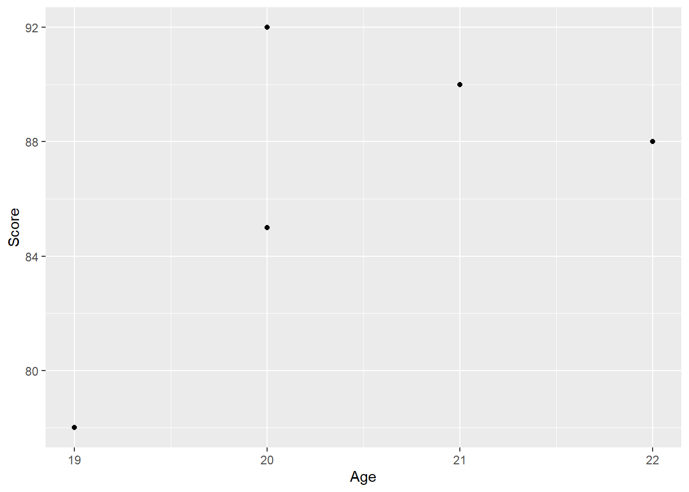
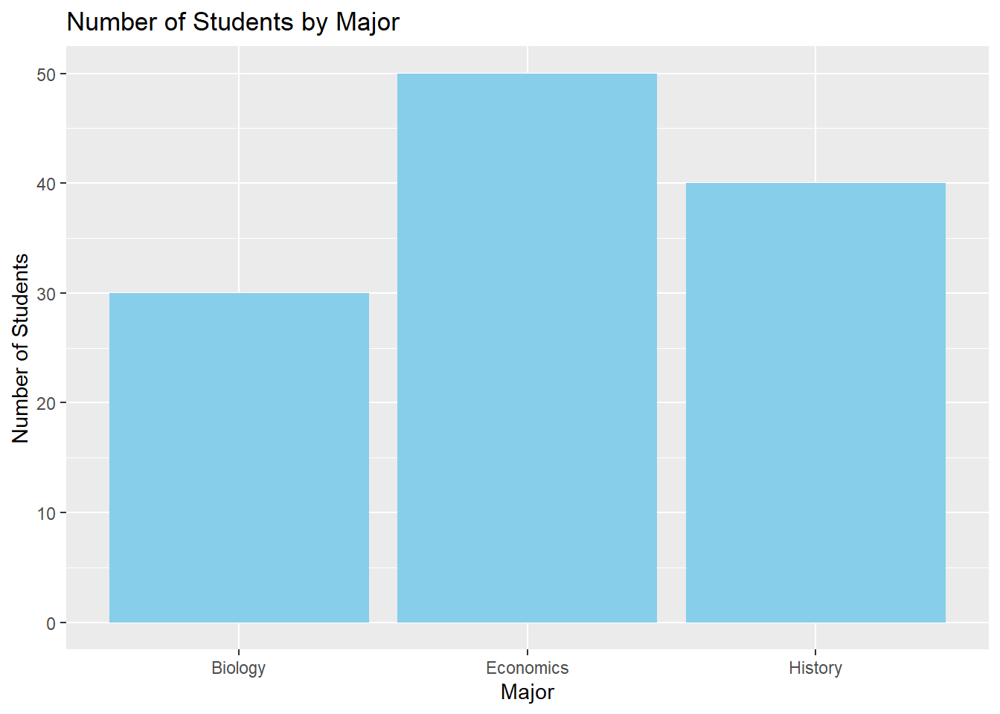

ggplot(data = students_df)Tutorial 5: Visualization with ggplot2
Visualization with ggplot2
In this tutorial, we will explore data visualization using ggplot2, a powerful and flexible package in the Tidyverse for creating graphics. Understanding how to visualize data effectively is crucial for analyzing and presenting your findings. We will cover the basics of creating various types of plots and customizing them to suit your needs.
5.0 The grammar of graphics (The GG in GGPlot)
The Grammar of Graphics: An Overview
The Grammar of Graphics is a framework for data visualization that provides a structured and systematic approach to creating graphics. It was introduced by Leland Wilkinson in his book The Grammar of Graphics and serves as the foundation for ggplot2, a popular R package for data visualization. The key idea behind the Grammar of Graphics is that any statistical graphic can be built up from a few basic components, combined according to a set of rules. This approach allows for flexibility and consistency in creating complex visualizations.
Key Components of the Grammar of Graphics
Data: The dataset that you want to visualize. It typically consists of rows (observations) and columns (variables).
Aesthetics (aes): These are mappings between data variables and visual properties of the plot, such as position (x, y), color, size, shape, and more. For example, mapping a variable to the x-axis or mapping a variable to color.
Geometries (geom): These are the visual elements that represent data on the plot, such as points, lines, bars, or shapes. For instance,
geom_point()creates a scatter plot,geom_line()creates a line plot, andgeom_bar()creates a bar chart.Scales: Scales control how data values are mapped to aesthetic attributes like position, color, or size. For example,
scale_x_continuous()controls the mapping of data values to positions along the x-axis.Facets: Faceting is a way to split the data into subsets and create multiple plots for each subset, allowing for comparisons across groups. For example, you can create separate plots for each level of a categorical variable.
Statistics (stat): These are transformations of the data that are applied before plotting. For example, a histogram involves binning data and then counting the number of observations in each bin.
Coordinates (coord): This component controls the coordinate system used for the plot. The most common coordinate system is Cartesian (x, y), but others include polar coordinates or log scales.
Themes: Themes control the overall appearance of the plot, including non-data elements like font size, background color, grid lines, and axis labels. For example,
theme_minimal()provides a clean, minimalistic style for the plot.
How ggplot2 Uses the Grammar of Graphics
ggplot2 is an implementation of the Grammar of Graphics in R. It allows you to create complex visualizations by combining these basic components in a structured way. Here’s how ggplot2 uses the Grammar of Graphics:
- Initialization with
ggplot():The
ggplot()function initializes a ggplot object and specifies the dataset you want to use. For example:This function doesn’t produce a plot by itself; it sets up the plot object to which you can add layers.
- Aesthetic Mapping with
aes():Inside the
ggplot()function or within individual geometries, you define aesthetic mappings using theaes()function. For example:ggplot(data = students_df, aes(x = Age, y = Score))This mapping connects the data to the visual properties of the plot, like mapping
Ageto the x-axis andScoreto the y-axis.
- Adding Geometries with
geom_*()Functions:Geometries are added to the plot to represent the data. Each geometry corresponds to a type of plot element, such as points, lines, or bars. For example:
ggplot(data = students_df, aes(x = Age, y = Score)) + geom_point()This adds a layer of points to the plot, creating a scatter plot.
- Customizing Scales and Axes:
Scales can be customized to control how data values map to visual attributes. For example, you can adjust the x-axis limits or change the color scale:
ggplot(data = students_df, aes(x = Age, y = Score)) + geom_point() + scale_x_continuous(limits = c(18, 25))
- Faceting for Multi-Panel Plots:
Faceting allows you to create multiple plots based on subsets of the data. For example:
ggplot(data = students_df, aes(x = Age, y = Score)) + geom_point() + facet_wrap(~ Major)This creates separate scatter plots for each
Major.
- Applying Themes:
Themes are used to control the appearance of non-data elements in the plot. For example:
ggplot(data = students_df, aes(x = Age, y = Score)) + geom_point() + theme_minimal()This applies a minimalistic style to the plot.
Mapping in ggplot2
Mapping in ggplot2 refers to the connection between your data variables and the visual aspects of your plot. The aes() function is where this mapping happens. It tells ggplot2 how to map your data onto the plot. Here’s how mapping works:
- Position Mapping (x and y):
The most common type of mapping is position mapping, where you map variables to the x-axis and y-axis. For example:
ggplot(data = students_df, aes(x = Age, y = Score))This maps the
Agevariable to the x-axis and theScorevariable to the y-axis.
- Color Mapping:
You can map a variable to the color aesthetic to differentiate data points by a categorical or continuous variable. For example:
ggplot(data = students_df, aes(x = Age, y = Score, color = Major))This maps the
Majorvariable to the color of the points, allowing different colors for different majors.
- Size Mapping:
The size of points or other elements can be mapped to a variable. For example:
ggplot(data = student_performance_df, aes(x = Homework_Score, y = Exam_Score, size = Study_Hours))This maps the
Study_Hoursvariable to the size of the points, with more study hours represented by larger points.
- Shape Mapping:
Similarly, you can map a variable to the shape aesthetic to differentiate points by shape. For example:
ggplot(data = students_df, aes(x = Age, y = Score, shape = Gender))This maps the
Gendervariable to the shape of the points, using different shapes for male and female students.
Importance of Understanding the Grammar of Graphics
Understanding the Grammar of Graphics is essential because it gives you a powerful, flexible, and consistent way to create visualizations. By understanding how the different components work together, you can build complex and customized plots to meet your specific data visualization needs. It also makes it easier to debug and refine your plots since you know exactly how each part of the plot is constructed.
5.1 Introduction to ggplot2
ggplot2 is based on the grammar of graphics, which provides a structured approach to building plots by layering components such as data, aesthetics, and geometries.
5.1.1 Tibbles and Data Frames
Before diving into ggplot2, it’s important to understand the difference between tibbles and data frames.
- Tibbles are modern versions of data frames provided by the Tidyverse, which are more user-friendly for data analysis. They provide better printing methods and do not convert strings to factors by default.
- For now, we will continue using
data.frameto create datasets for simplicity. However, in future tutorials, we will introduce tibbles and their advantages.
5.1.2 Installing and Loading ggplot2
If you haven’t already installed the Tidyverse, you can install ggplot2 individually or load it as part of the Tidyverse.
# Install ggplot2 (if not already installed)
install.packages("ggplot2")
# Load ggplot2
library(ggplot2)Explanation: - install.packages() installs ggplot2 if it’s not already installed. - library() loads the package, making its functions available for use.
5.1.3 Basic Structure of a ggplot2 Plot
The basic structure of a ggplot2 plot consists of the following components: - Data: The dataset being used. - Aesthetics (aes): Mappings between variables and visual properties such as x and y positions, colors, sizes, etc. - Geometries (geom): The type of plot or geometric objects used to represent the data (e.g., points, lines, bars).
Here’s an example of a simple scatter plot:
# Example data frame
students_df <- data.frame(
Name = c("Alice", "Bob", "Charlie", "David", "Eva"),
Score = c(85, 90, 78, 88, 92),
Age = c(20, 21, 19, 22, 20)
)
# Creating a scatter plot of Score vs. Age
ggplot(data = students_df, aes(x = Age, y = Score)) +
geom_point()
Explanation: - ggplot() initializes the plot and specifies the data to be used. - aes() defines the aesthetic mappings, such as x and y variables. - geom_point() adds a layer of points (a scatter plot) to the plot.
5.2 Creating Different Types of Plots
5.2.1 Scatter Plots
Scatter plots are used to visualize the relationship between two continuous variables.
# Scatter plot with additional customizations
ggplot(data = students_df, aes(x = Age, y = Score)) +
geom_point(color = "blue", size = 3) +
labs(title = "Student Scores vs. Age", x = "Age", y = "Score")Explanation: - The color and size arguments in geom_point() customize the appearance of the points. - labs() is used to add titles and labels to the axes.
5.2.2 Bar Charts
Bar charts are used to compare the counts or frequencies of categorical variables.
# Example data frame for bar chart
majors_df <- data.frame(
Major = c("Economics", "History", "Biology"),
Students = c(50, 40, 30)
)
# Creating a bar chart of the number of students per major
ggplot(data = majors_df, aes(x = Major, y = Students)) +
geom_bar(stat = "identity", fill = "skyblue") +
labs(title = "Number of Students by Major", x = "Major", y = "Number of Students")
Explanation: - geom_bar() is used for creating bar charts. The stat = "identity" argument indicates that the heights of the bars should represent the values in the dataset. - The fill argument customizes the color of the bars.
5.2.3 Line Plots
Line plots are useful for visualizing trends over time or across ordered categories.
# Example data frame for line plot
yearly_scores_df <- data.frame(
Year = c(2018, 2019, 2020, 2021, 2022),
AverageScore = c(80, 82, 85, 87, 90)
)
# Creating a line plot of average scores over years
ggplot(data = yearly_scores_df, aes(x = Year, y = AverageScore)) +
geom_line(color = "red", size = 1.5) +
geom_point(color = "red", size = 3) +
labs(title = "Average Scores Over Time", x = "Year", y = "Average Score")Warning: Using `size` aesthetic for lines was deprecated in ggplot2 3.4.0.
ℹ Please use `linewidth` instead.Explanation: - geom_line() adds a line to the plot, while geom_point() overlays points on the line. - The color and size of the line and points are customized using color and size arguments.
5.2.4 Histograms
Histograms display the distribution of a single continuous variable by dividing it into bins.
# Creating a histogram of student scores
ggplot(data = students_df, aes(x = Score)) +
geom_histogram(binwidth = 5, fill = "green", color = "black") +
labs(title = "Distribution of Student Scores", x = "Score", y = "Frequency")Explanation: - geom_histogram() creates the histogram. The binwidth argument controls the width of the bins. - The fill and color arguments customize the color of the bars and their outlines.
5.2.5 Box Plots
Box plots are used to visualize the distribution of a continuous variable and identify potential outliers.
# Example data frame with Major added
students_major_df <- data.frame(
Name = c("Alice", "Bob", "Charlie", "David", "Eva"),
Score = c(85, 90, 78, 88, 92),
Age = c(20, 21, 19, 22, 20),
Major = c("Economics", "Economics", "History", "Biology", "History")
)
# Creating a box plot of scores by major
ggplot(data = students_major_df, aes(x = Major, y = Score)) +
geom_boxplot(fill = "orange") +
labs(title = "Box Plot of Scores by Major", x = "Major", y = "Score")Explanation: - geom_boxplot() creates the box plot, which shows the median, quartiles, and potential outliers for each group.
5.3 Customizing ggplot2 Plots
5.3.1 Adding Themes
Themes in ggplot2 allow you to customize the overall appearance of your plots.
# Applying a minimal theme to a scatter plot
ggplot(data = students_df, aes(x = Age, y = Score)) +
geom_point(color = "blue", size = 3) +
labs(title = "Student Scores vs. Age", x = "Age", y = "Score") +
theme_minimal()Explanation: - theme_minimal() applies a clean and minimalistic style to the plot. Other themes include theme_classic(), theme_light(), and more.
5.3.2 Faceting
Faceting allows you to create multiple plots based on a categorical variable.
# Creating facets based on Major
ggplot(data = students_major_df, aes(x = Age, y = Score)) +
geom_point(color = "purple", size = 3) +
labs(title = "Student Scores vs. Age by Major", x = "Age", y = "Score") +
facet_wrap(~ Major)Explanation: - facet_wrap(~ Major) creates a separate plot for each level of the Major variable.
5.3.3 Customizing Scales
You can customize the scales of your plot, including axis limits and colors.
# Customizing axis limits and colors
ggplot(data = students_major_df, aes(x = Age, y = Score)) +
geom_point(aes(color = Major), size = 3) +
labs(title = "Student Scores vs. Age", x = "Age", y = "Score") +
scale_x_continuous(limits = c(18, 25)) +
scale_color_manual(values = c("Economics" = "blue", "History" = "red", "Biology" = "green"))Explanation: - scale_x_continuous() sets the limits for the x-axis. - `scale_color
_manual()allows you to manually specify the colors for each level of theMajor` variable.
Exercises and Solutions
Exercise 1: Creating a Scatter Plot with Multiple Variables
- Create a scatter plot using a new data frame
student_performance_dfwith variablesHomework_ScoreandExam_Scorefor eight students. - Add a third variable
Study_Hoursto the scatter plot, mapping it to the size of the points.
Solution:
# Creating the data frame
student_performance_df <- data.frame(
Student = c("Anna", "Ben", "Cathy", "Derek", "Ella", "Frank", "Grace", "Hannah"),
Homework_Score = c(78, 85, 92, 88, 76, 90, 82, 94),
Exam_Score = c(80, 87, 90, 85, 79, 92, 85, 96),
Study_Hours = c(10, 12, 14, 9, 8, 13, 11, 15)
)
# Creating and customizing the scatter plot
ggplot(data = student_performance_df, aes(x = Homework_Score, y = Exam_Score, size = Study_Hours)) +
geom_point(color = "blue") +
labs(title = "Homework vs. Exam Scores with Study Hours", x = "Homework Score", y = "Exam Score")Exercise 2: Creating a Stacked Bar Chart
- Using a new data frame
gender_major_df, create a stacked bar chart to visualize the number of male and female students in three different majors (Math, English, Science). - Customize the colors for male and female students differently and add titles and labels.
Solution:
# Creating the data frame
gender_major_df <- data.frame(
Major = rep(c("Math", "English", "Science"), each = 2),
Gender = rep(c("Male", "Female"), times = 3),
Count = c(30, 20, 25, 15, 35, 25)
)
# Creating and customizing the stacked bar chart
ggplot(data = gender_major_df, aes(x = Major, y = Count, fill = Gender)) +
geom_bar(stat = "identity") +
labs(title = "Number of Students by Major and Gender", x = "Major", y = "Number of Students") +
scale_fill_manual(values = c("Male" = "blue", "Female" = "pink"))Exercise 3: Creating a Time Series Line Plot
- Create a line plot using a new data frame
monthly_sales_dfthat tracks monthly sales (in thousands of dollars) for a company over a year. - Add points to the line plot, customize the line type to be dashed, and label the axes appropriately.
Solution:
# Creating the data frame
monthly_sales_df <- data.frame(
Month = factor(c("January", "February", "March", "April", "May", "June", "July", "August", "September", "October", "November", "December"),
levels = c("January", "February", "March", "April", "May", "June", "July", "August", "September", "October", "November", "December")),
Sales = c(120, 130, 150, 160, 170, 180, 175, 190, 200, 210, 220, 230)
)
# Creating and customizing the time series line plot
ggplot(data = monthly_sales_df, aes(x = Month, y = Sales)) +
geom_line(color = "darkgreen", linetype = "dashed", size = 1.2) +
geom_point(color = "darkgreen", size = 3) +
labs(title = "Monthly Sales Over a Year", x = "Month", y = "Sales (in thousands)")`geom_line()`: Each group consists of only one observation.
ℹ Do you need to adjust the group aesthetic?Exercise 4: Creating a Density Plot
- Using a new data frame
income_df, create a density plot to display the distribution of income levels (in thousands of dollars) across a population of 100 individuals. - Customize the density plot with a fill color and adjust the transparency.
Solution:
# Creating the data frame
set.seed(42) # For reproducibility
income_df <- data.frame(
Income = c(rnorm(100, mean = 50, sd = 10))
)
# Creating and customizing the density plot
ggplot(data = income_df, aes(x = Income)) +
geom_density(fill = "blue", alpha = 0.5) +
labs(title = "Distribution of Income Levels", x = "Income (in thousands)", y = "Density")Exercise 5: Creating a Violin Plot
- Using a new data frame
exam_scores_dfthat includes exam scores for three different classes (Math, Science, History), create a violin plot to visualize the distribution of scores for each class. - Customize the violin plot by changing the fill color and adding a title and labels.
Solution:
# Creating the data frame
exam_scores_df <- data.frame(
Class = rep(c("Math", "Science", "History"), each = 50),
Score = c(rnorm(50, mean = 75, sd = 10), rnorm(50, mean = 80, sd = 12), rnorm(50, mean = 70, sd = 15))
)
# Creating and customizing the violin plot
ggplot(data = exam_scores_df, aes(x = Class, y = Score)) +
geom_violin(fill = "purple", color = "black") +
labs(title = "Distribution of Exam Scores by Class", x = "Class", y = "Score")